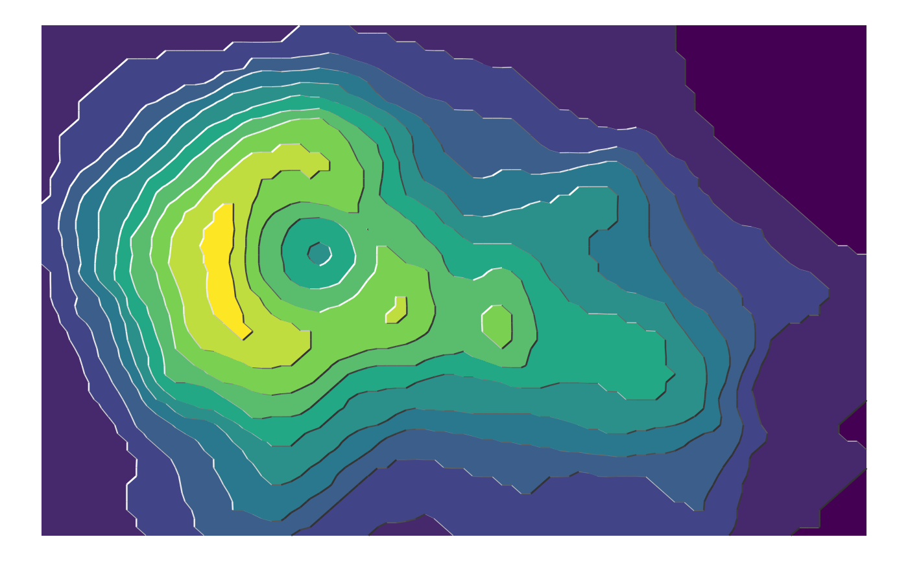
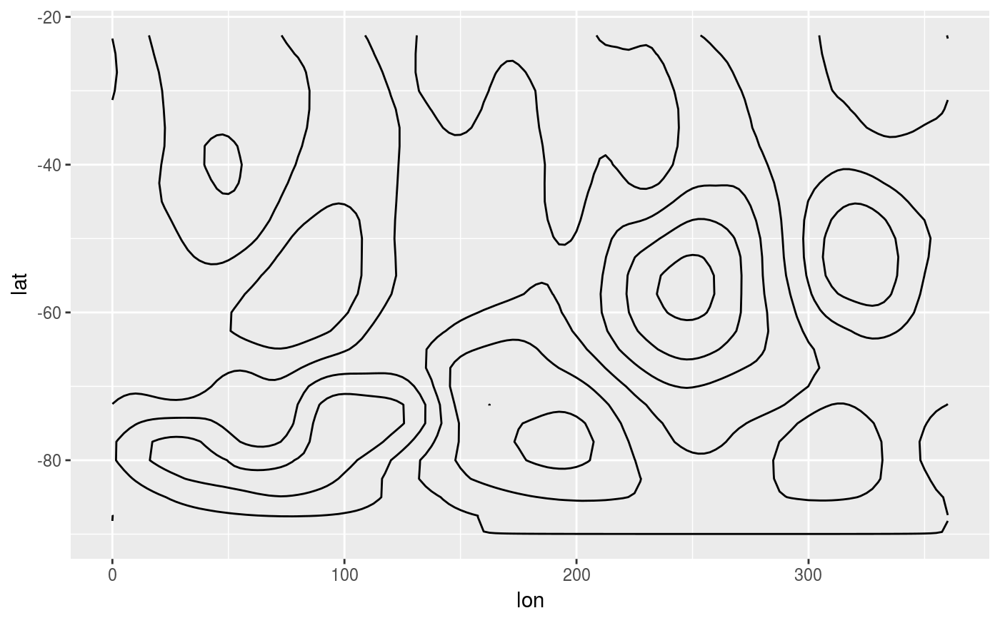
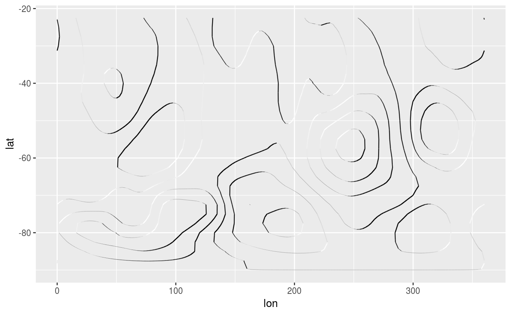
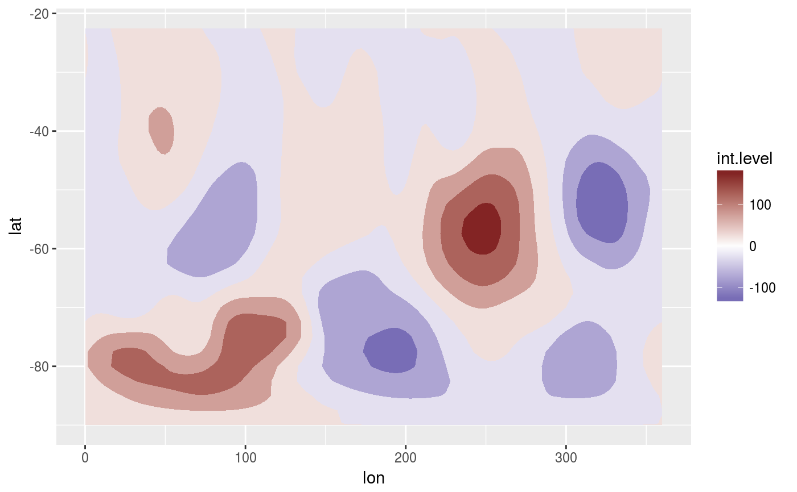
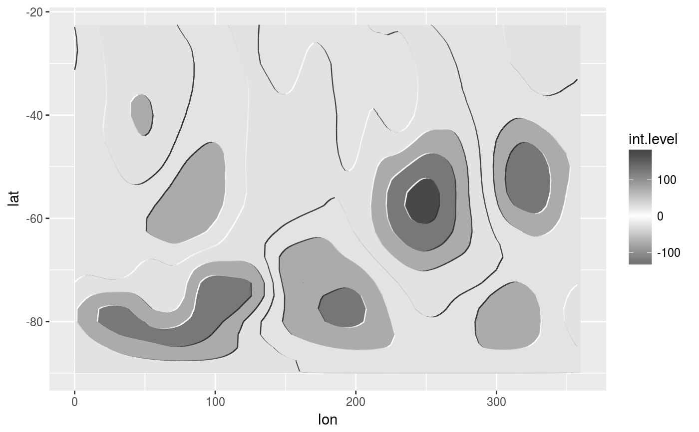

R/geom_contour_tanaka.R
Illuminated contours (aka Tanaka contours) use varying brightness and width to create an illusion of relief. This can help distinguishing between concave and convex areas (local minimums and maximums), specially in black and white plots or to make photocopy safe plots with divergent colour palettes, or to render a more aesthetically pleasing representation of topogaphy.
geom_contour_tanaka(mapping = NULL, data = NULL, stat = "Contour2", position = "identity", ..., breaks = NULL, bins = NULL, binwidth = NULL, sun.angle = 60, light = "white", dark = "gray20", na.rm = FALSE, circular = NULL, show.legend = NA, inherit.aes = TRUE)
| mapping | Set of aesthetic mappings created by |
|---|---|
| data | The data to be displayed in this layer. There are three options: If A A |
| stat | The statistical transformation to use on the data for this layer, as a string. |
| position | Position adjustment, either as a string, or the result of a call to a position adjustment function. |
| ... | other arguments passed on to |
| breaks | One of:
|
| bins | Number of evenly spaced breaks. |
| binwidth | Distance between breaks. |
| sun.angle | angle of the sun in degrees counterclockwise from 12 o' clock |
| light, dark | valid colour representing the light and dark shading |
| na.rm | If |
| circular | either NULL, "x" or "y" indicating which dimension is circular, if any. |
| show.legend | logical. Should this layer be included in the legends?
|
| inherit.aes | If |
geom_contour_tanaka understands the following aesthetics (required aesthetics are in bold)
x
y
z
linetype
library(ggplot2) library(data.table) # A fresh look at the boring old volcano dataset ggplot(melt(volcano), aes(Var1, Var2)) + geom_contour_fill(aes(z = value)) + geom_contour_tanaka(aes(z = value), stat = "contour2") + theme_void() + viridis::scale_fill_viridis(guide = "none")data(geopotential) geo <- geopotential[date == unique(date)[4]] geo[, gh.z := Anomaly(gh), by = lat]#> lon lat lev gh date gh.z #> 1: 0.0 -22.5 700 3150.467 1990-04-01 -0.5528954 #> 2: 2.5 -22.5 700 3146.000 1990-04-01 -5.0194482 #> 3: 5.0 -22.5 700 3141.833 1990-04-01 -9.1861962 #> 4: 7.5 -22.5 700 3139.467 1990-04-01 -11.5528954 #> 5: 10.0 -22.5 700 3139.967 1990-04-01 -11.0528954 #> --- #> 4028: 347.5 -90.0 700 2696.433 1990-04-01 0.0000000 #> 4029: 350.0 -90.0 700 2696.433 1990-04-01 0.0000000 #> 4030: 352.5 -90.0 700 2696.433 1990-04-01 0.0000000 #> 4031: 355.0 -90.0 700 2696.433 1990-04-01 0.0000000 #> 4032: 357.5 -90.0 700 2696.433 1990-04-01 0.0000000# In a monochrome contour map, it's impossible to know which areas are # local maximums or minimums. ggplot(geo, aes(lon, lat)) + geom_contour2(aes(z = gh.z), color = "black", circular = "x")# With tanaka contours, they are obvious. ggplot(geo, aes(lon, lat)) + geom_contour_tanaka(aes(z = gh.z), dark = "black", circular = "x") + scale_fill_divergent()# A good divergent color palette has the same luminosity for positive # and negative values.But that means that printed in grayscale (Desaturated), # they are indistinguishable. (g <- ggplot(geo, aes(lon, lat)) + geom_contour_fill(aes(z = gh.z), circular = "x") + scale_fill_gradientn(colours = c("#767676", "white", "#484848"), values = c(0, 0.415, 1)))